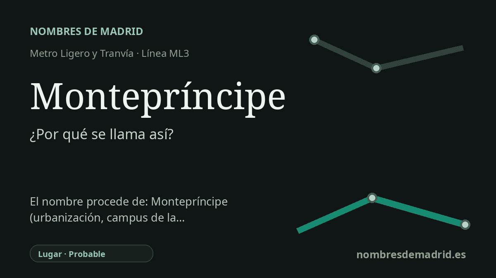

Publicado el · Investigación de Nombres de Madrid · Cómo verificamos cada origen · 7 fuentes consultadas
Respuesta rápida
La estación de Montepríncipe toma su nombre de la cercana urbanización y avenida de Montepríncipe. La urbanización se levantó sobre parte del histórico Monte de Boadilla, vinculado al infante don Luis y más tarde a la familia Rúspoli.
La historia del nombre
La estación de Montepríncipe recibe el nombre del lugar que la rodea: la avenida de Montepríncipe y la urbanización de Montepríncipe. Metro Ligero Oeste describe la parada como una estación de la ML3 situada en el extremo sur de la urbanización, cerca del campus de la Universidad CEU San Pablo y de la Facultad de Informática de la UPM.
Detrás de ese nombre suburbano moderno está el antiguo Monte de Boadilla, la finca arbolada que marcó esta parte del borde metropolitano madrileño. La historia local de la comunidad de Montepríncipe remonta la finca desde los marqueses de Mirabal hasta el infante Luis Antonio de Borbón, que compró el Señorío de Boadilla en 1761 y mandó construir el cercano palacio entre 1763 y 1765.
La propiedad pasó después por la familia de María Teresa de Borbón y Vallabriga, Manuel Godoy y sus descendientes. Carlota Luisa de Godoy y Borbón se casó con Camilo Rúspoli, príncipe de Cerveteri, y la familia Rúspoli quedó vinculada a la historia patrimonial posterior de Boadilla. Según la historia de la comunidad, Carlos Rúspoli y Caro vendió parte del Monte de Boadilla en los años sesenta para construir las urbanizaciones Monte de las Encinas y Montepríncipe.
Así, el nombre de la estación conserva de forma muy condensada una historia de paisaje y de propiedad aristocrática. El primer elemento, monte, remite de manera natural al Monte de Boadilla; el segundo, príncipe, se relaciona muy probablemente con los títulos principescos de la línea Rúspoli y con la historia real y nobiliaria de la finca. La estación abrió con Metro Ligero Oeste en 2007, cuando la ML3 conectó Colonia Jardín con Puerta de Boadilla.
La evidencia directa sobre el nombre de transporte es sólida: la estación toma el nombre del topónimo cercano Montepríncipe. La etimología más profunda es probable, no plenamente demostrada, porque las fuentes disponibles en línea explican la historia de la finca y de la urbanización de los años sesenta, pero no muestran un documento original de denominación de la urbanización. Hay una corrección importante: aunque Montepríncipe se asocia mucho con Boadilla del Monte, MLO sitúa la estación en el término municipal de Alcorcón, junto al límite con Boadilla.